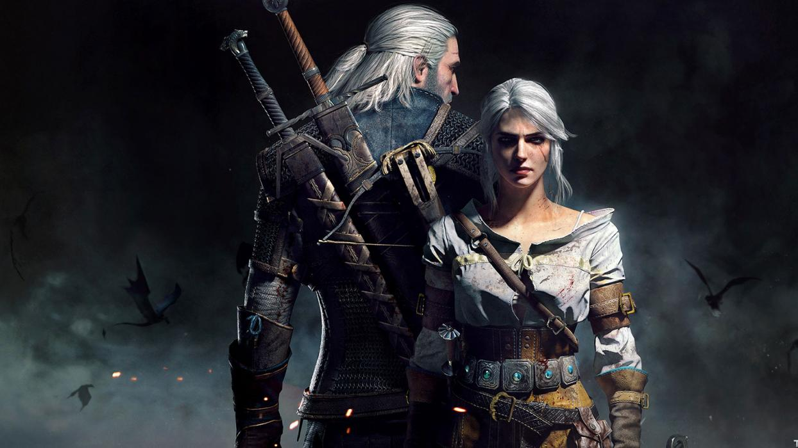

Geralt de Rivia
Geralt de Rivia es un brujo, protagonista principal de la Saga The Witcher escrita por Andrzej Sapkowski y de los videojuegos The Witcher.
Eduardo Cerda
Geralt es un cazador de monstruos a sueldo. Posee habilidades sobrehumanas y es un maestro espadachín Geralt, también es conocido como Gwynbleidd en la Lengua Élfica (traducido quiere decir “Lobo Blanco). Este apodo fue dado por las dríadas. También es conocido como Carnicero de Blaviken, por un desafortunado hecho ocurrido en tal ciudad. La mayoría de las veces se muestra como alguien apático, cínico y amenazante. A pesar de su naturaleza fría, en el interior se esconde un amigo ferozmente leal, y un hombre de muy buen humor, y como alguien no indiferente al sufrimiento. Es muy protector y leal con sus compañeros y amigos, y está dispuesto a realizar grandes hazañas por aquellos que le importan.
Puede ser muy bondadoso y cuidar a la gente que ama. Es muy protector y leal con sus compañeros y amigos, y está dispuesto a realizar grandes hazañas por aquellos que le importan. Puede ser muy bondadoso y cuidar a la gente que ama. Geralt también es conocido por su habilidad para aliviar situaciones intensas. Su experiencia de casi 97 años en el mundo lo convierte en un hombre que sabe que hacer en cada situación. Frecuentemente muestra remordimiento y revelaciones de su vida a lo largo de los libros. Otras veces, tiene crisis de personalidad, llegando a querer dejar de ser brujo. Geralt tiene una personalidad por las mujeres pelirrojas y las hechiceras, un ejemplo de ello, su romance con Triss Merigold.
BIOGRAFIA
Geralt es el hijo de la hechicera Visenna y del guerrero Korin. Poco después de su nacimiento, Geralt fué llevado por su madre a la Escuela del Lobo, en Kaer Morhen. Allí, Geralt fue entrenado y hecho para ser un brujo. El entrenamiento intensivo de Geralt y la experimentación mutágena le concedieron un aumento considerable de fuerza, velocidad, resistencia, curación, sentidos, inmunidad completa a enfermedades y venenos convencionales, y una resistencia extrema al dolor. Debido a su brillante desempeño en su entrenamiento como brujo, Geralt fué seleccionado para experimentación mutágena adicional. Su pelo blanquecino es un resultado de estos expermentos.Luego de terminar su entrenaniento de brujo, Geralt se embarcó al mundo montado en un caballo llamado Sardinilla, nombre que el daría a cada uno de los caballos que tendría.
Desde ese momento se había convertido en cazador de monstruos a sueldo. En un momento, Geralt exigió al hijo no nacido de la Princesa Pavetta como recompensa por sus servicios. Resultó que este terminó siendo una niña, y Geralt la rechazó. A pesar de eso, él y Ciri se cruzaron muchas veces durante sus vidas. Finalmente, Geralt adoptó a Ciri como su protegida, tras la muerte de su abuela la Reina Calanthe. Ahora, la ama como si fuese su hija propia. A pesar de su nombre, Geralt no procede de la ciudad de Rivia. Un dia el maestro Vesemir animó a los nuevos brujos a que eligieran un apellido. Como primera opción, Geralt optó por “Geralt Roger Eric Du Haute-Bellegarde”, pero esta opción fué rechazada por Vesemir, la que calificó como tonta y pretenciosa. “De Rivia” era la opción mas práctica. Geralt tomó muy en serio este título, tanto que su tono de voz y acento eran como alguien de Rivia
El mal es el mal. Menor, mayor, mediano, es igual, las proporciones son convenidas y las fronteras son borrosas. No soy un santo ermitaño, no siempre he obrado bien. Pero si tengo que elegir entre un mal y otro, prefiero no elegir en absoluto.
Andrzej Sapkowski , El último deseo.
El mal es el mal. Menor, mayor, mediano, es igual, las proporciones son convenidas y las fronteras son borrosas. No soy un santo ermitaño, no siempre he obrado bien. Pero si tengo que elegir entre un mal y otro, prefiero no elegir en absoluto.
Andrzej Sapkowski , El último deseo.
SAGA DE
LIBROS
La saga de Geralt de Rivia está encuadrada en eso que se ha venido a llamar "fantasía adulta".Una forma de diferenciarlo del género de las "dragonadas" con una mayor calidad literaria, y violencia y sexo más explícitos. La saga, obra del autor polaco Andrzej Sapkowski, está compuesta por 7 libros (convertidos en 8 gracias a las astutas habilidades empresariales de las editoriales españolas), siendo los dos primeros tomos compendios de relatos que presentan a los personajes, más que parte de la saga en sí. A partir del tercer libro la obra se convierte en una saga al uso.Los cuentos fueron publicados inicialmente por la revista polaca Fantastyka, comenzando a mediados de la década de 1980. El primer cuento, llamado Wiedźmin (El brujo), fue escrito en 1986 para un concurso realizado por la dicha publicación, quedando en el tercer lugar. Posteriormente las cuatro primeras historias que tratan al brujo Geralt de Rivia fueron presentadas en una colección de cuentos titulada Wiedźmin en conjunto con Droga, z której się nie wraca (el camino sin retorno), que transcurre antes de las historias del brujo.
VIDEOJUEGOS
En octubre de 2007 fue lanzado The Witcher, un juego RPG para PC, desarrollado y puesto a la venta por el estudio polaco CDProjekt, donde se cuenta la historia de Geralt posterior a la finalización del último libro .El juego ha ganado renombre internacional y ha ganado más de 90 premios de la crítica. Adicionalmente, The Witcher entró a la historia al convertirse en uno de los 100 juegos más vendidos para PC de toda la historia con un récord de ventas de 1.2 millones alrededor del mundo. CD Projekt trabajó en la segunda entrega: The Witcher 2: Assassins of Kings, puesta a la venta el 17 de mayo de 2011. Esta secuela continuó donde terminó la primera, corrigiendo errores de The Witcher y remodelando por completo el sistema de combate. También introdujo unos gráficos impactantes para su época: se destaca especialmente el un uso abrumador de luces y sombras ambientales y la opción gráfica "hiperrealismo", donde el juego genera varias veces cada imagen para conseguir un resultado mucho más pulido, a costa del rendimiento. En el E3 2011 se publicó la adaptación del juego a Xbox 360. El 17 de abril de 2012 se estrenó la secuela en la consola Xbox 360, contando con excelentes críticas por su adaptación a la consola de Microsoft. El 19 de mayo de 2015, después de un retraso, salió a la venta la tercera entrega del videojuego: The Witcher 3: Wild Hunt. Está protagonizado, por Geralt de Rivia, Vesemir, Yennefer, Triss Merigold y Ciri. Esta entrega recibió críticas extremadamente positivas, ganando más de 200 premios y siendo catalogada por la mayoría de medios de videojuegos como "Mejor videojuego del Año 2015", además de catapultar a la fama a su empresa desarrolladora CD Projekt RED para convertirse en una de las compañías más valoradas en el ámbito debido a sus decisiones tomadas sobre DLC, expansiones y su negativa a incorporar DRM.